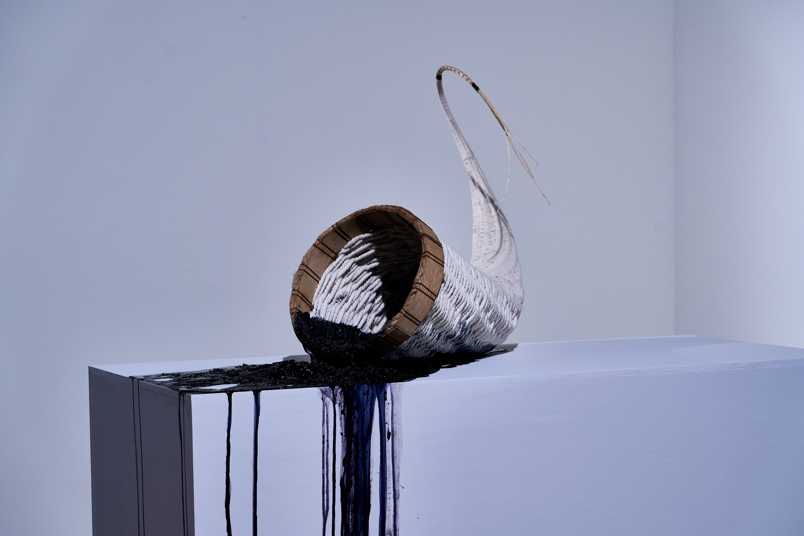
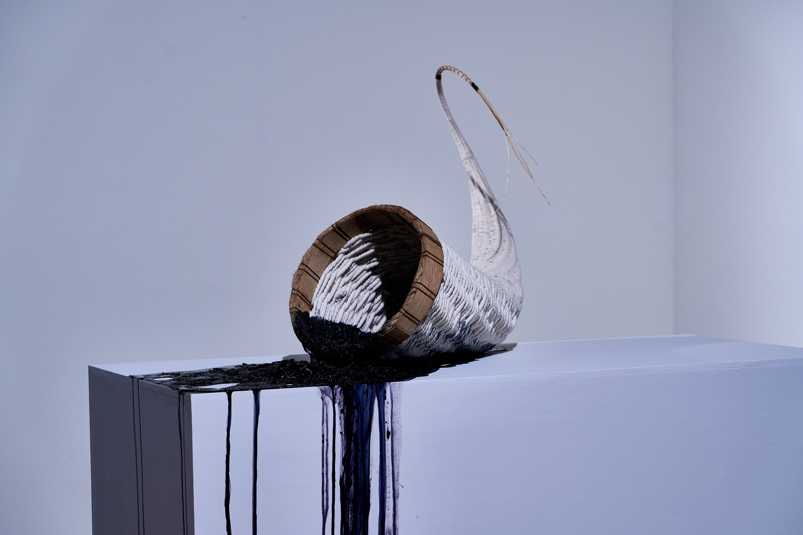

Oak, Grass, Linen, Oak Gall Ink, Gelatin, 30 x 16 x 48 inches,
woven cornucopia flopped over a pedestal
Serena JV Elston works with oak gall ink as a sculptural medium to critique human’s relationship with nature. Her investigation connects how mythology and folklore have built and reinforced a framework of extractive, domination focused ecological policies. Through this ecocritical lens, she explores the agricultural mirage these stories teach and how their influence continues notions of unending abundance.


 
